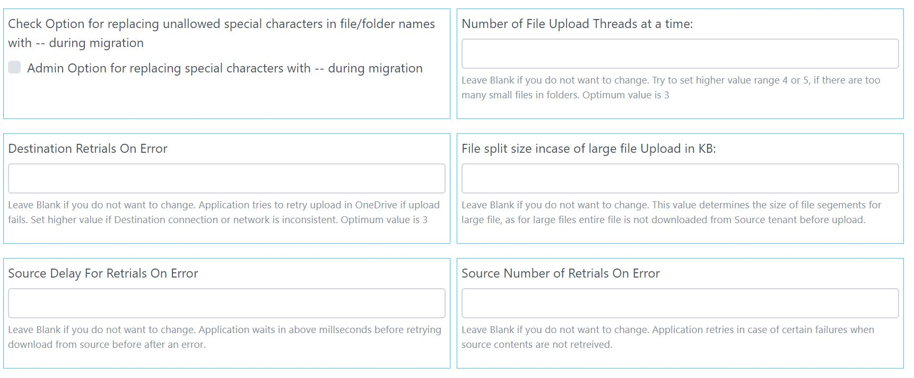

Settings configurations are done for two purpose.
This is covered in detail in Authentication section of this help.
Select Source for migration here and options for JWT or OAuth migration (depending on Source). Steps to create JSON files are covered in detail in Authentication section of this help.
This is covered in detail in Authentication section of this help.
Select Destination for migration here and options for JWT or OAuth migration (depending on Source). Steps to create JSON files are covered in detail in Authentication section of this help.
Note: Json files or client credential updated on this page for Source or Destination are stored in database and need not be uploaded again. If you wish to remove JSON file in database, or remove Client ID/Secret, please update a blank/dummy file or arbitrary value for Client ID and Client Secret.
Follow instruction on screen. Leave blank or as-is if you do not want to update.
